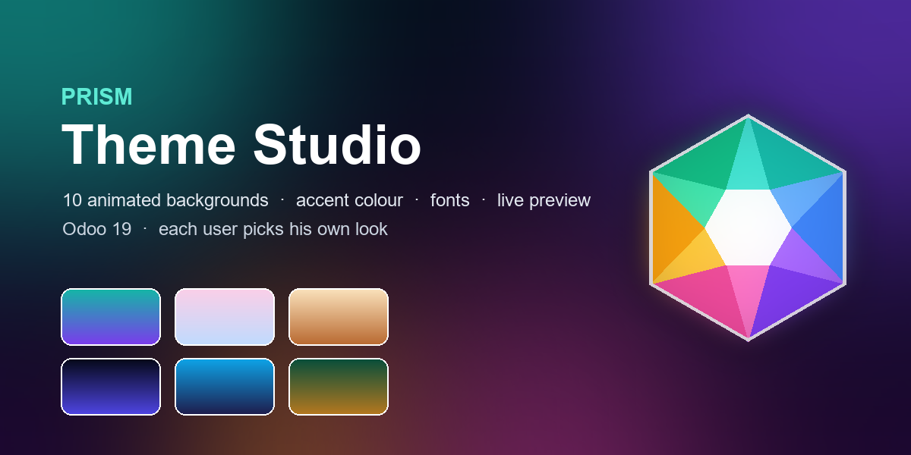

No image files to load: each background is made of gradients and small vector patterns, so it stays sharp on every screen and costs almost nothing to show.
| Aurora moving northern lights |
Mesh Bloom soft pastel colour clouds |
Desert Dunes sand waves under a low sun |
Midnight Sky twinkling stars |
Glass Ocean frosted glass over deep blue |
| Paper Studio drafting-paper grid |
Emerald Arabesque eight-point star pattern |
Sunset Horizon warm evening glow |
Graphite calm and minimal |
Neon Grid retro neon horizon |
Install it and nothing changes for anybody. Each user clicks the colourful brush in the top bar, switches the theme on and picks a style: every click shows at once and is kept for him on any computer. Other users keep their own look.
web.Author: Marwan Algaber